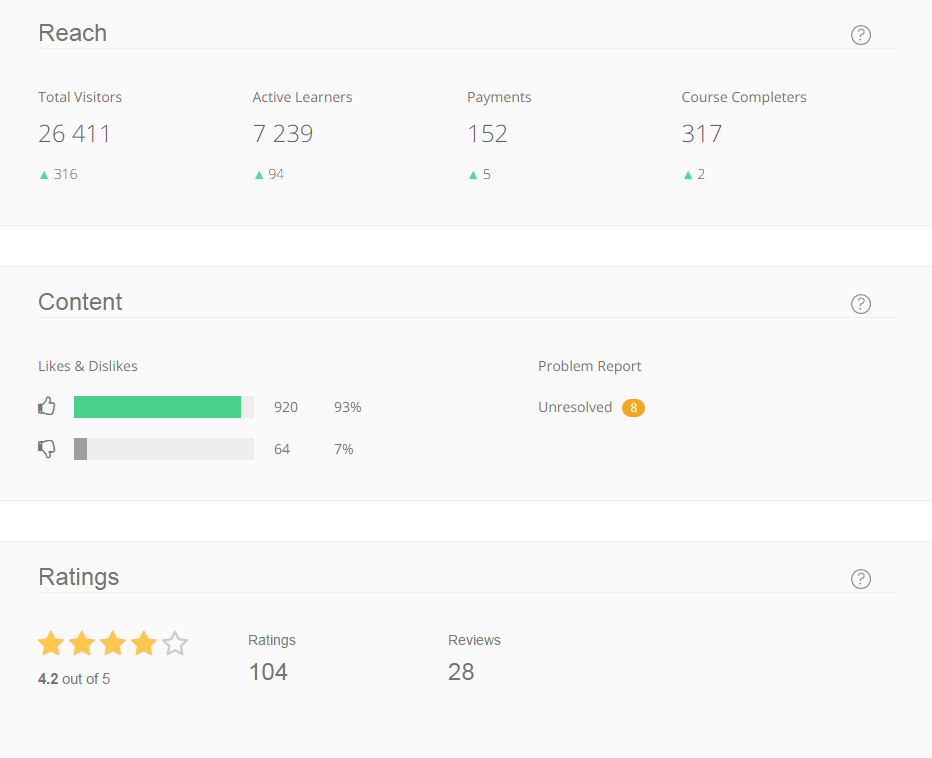

Clément Levallois
I received an email by a participant of CODAPPS, the MOOC I created to learn how to create native mobile apps. This MOOC is currently running on Coursera.
The participant found the course interesting, but wondered why there was so little activity on the forum. Does it mean the course has few participants?
I take this opportunity to share a few stats about the course, which launched in October 2015:

So we see there are today 7,239 active participants in the MOOC : meaning, anyone who started watching at least a video or reading a pdf and who is still registered.
We also see in a different screen (not reported here) that the MOOC has 12,352 enrolled learners since October 2015 (so, active participants + all who unregistered).
In terms of progression, there was an intake of 94 active students (133 enrolled students) in the past 7 days. The trend is stable, this is roughly the same number of new participants per week.
Now for the bad news: since it started, only 317 participants completed the course. It means that only 2.5% of the participants in this MOOC finish the lessons. Should I be depressed? Maybe a little :-)
Factors of explanation:
This is common to MOOCs: participants tend to "try and leave".[1]
CODAPPS might be particularly challenging: it teaches beginners how to create mobile apps. This is quite advanced and might discourage students more than the usual.
Now, on the forum: there is little activity on it indeed. Participants would probably tend to finish the course in larger numbers if I was consistently answering all questions posted. However, this is a daunting task: because the course is technical in nature, questions are often bug reports which take a very long tome to diagnose and debug.
I prefer to invest the time I devote to this course to the periodical update of the pdfs and videos (I’d say it takes me about 3 weeks, once a year), to keep up with the evolution of the software framework that this course is using. Already very time consuming!